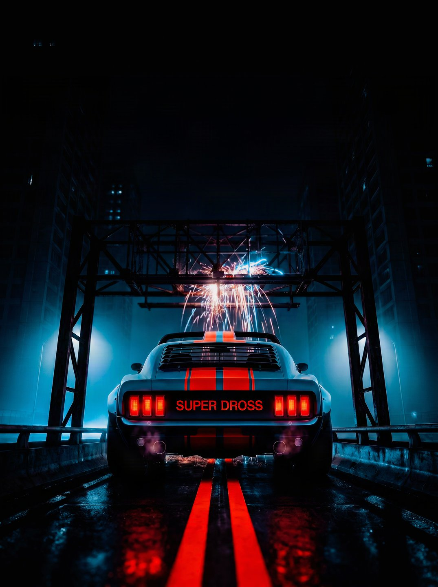
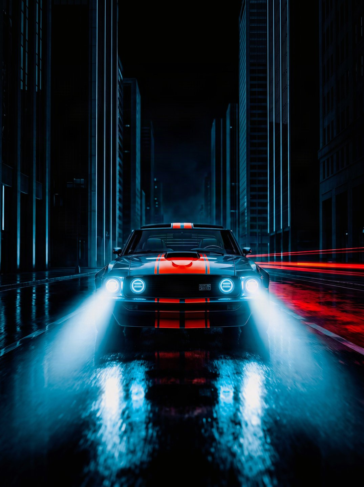
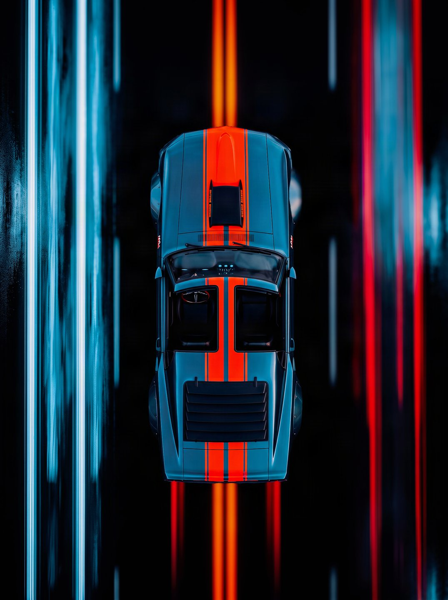
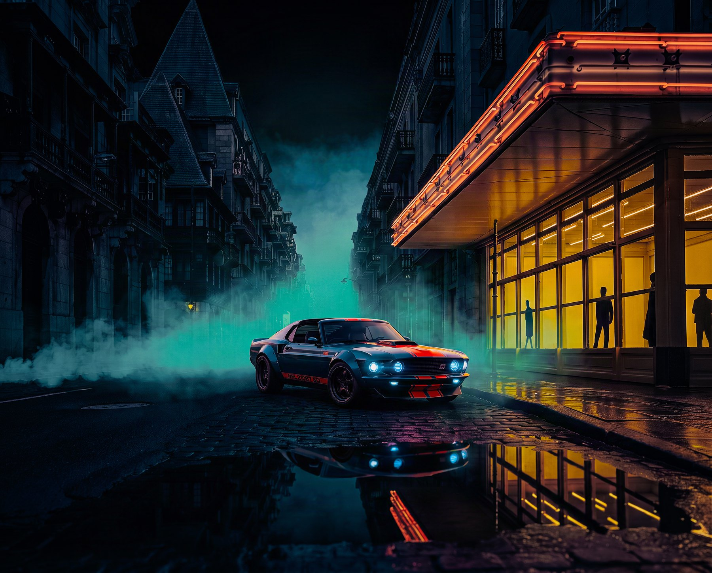
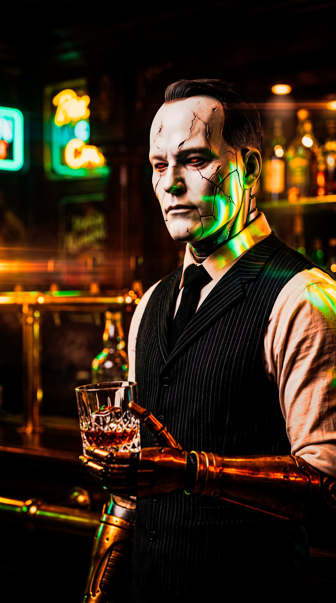

NRL 21067 SD ("SUPER DROSS") // ANTHROPOLIS TO THE STAGECOACH
Most studios only let you see the clean 4K render after the credits roll. This page leaves the hood popped open while we build Outpost Cruise Night in real time: locking a 6-panel orthographic hero vehicle that survives a 144-frame camera turn, matching graded 5:4 and 4:5 story plates across two opposing worlds, catching real generative physics failures on camera (RenderSin vs. RenderWin), and stitching the road cut to four studio synth masters.
> STUDIO AUDIO CONSOLE // OUTPOST CRUISE NIGHT MASTERS (320 KBPS FROM 48 KHZ WAV)
00:00 / 02:42
ACTIVE: WE ARE WHAT YOU SEE (NRL MASTER // WAWYS) // -13.2 LUFS // -2.7 DBTPCUE MARKERS: 01:02 MIDNIGHT SAX SOLO // 01:36 LOW-PASS TALKBOX BRIDGE
ENTRY #06 // RENDERSIN VS. RENDERWIN & 4X5 AURORA VAULT2026-11-19 // PROMPT PHYSICS AUDIT & OMNI KEYFRAMING
RenderSin *ding!*: Why Super Dross Shifted Into Reverse Inside a Smoke Screen (And How Optical Parallax Fixed It)
With the WAWYS (We Are What You See) stereo master locked at Track 01 on the console, we pivoted straight into building an Aurora-warp visual kit: five symmetrical 4x5 C2PA-signed plates engineered with dead-center framing and 60% obsidian/petrol negative space so Premiere Pro's VR Mobius Zoom, VR Rotate Sphere, and VR Plane to Sphere effects can fold the skyline without turning faces into nightmares.
On Clip 001 (Jax's inbound cockpit POV passing the WE ARE WHAT YOU SEE causeway monopole), our very first pass in Google Flow (Omni) handed us an all-time RenderSin ding!: Super Dross quietly shifted into Reverse while someone lobbed three tactical M18 teal smoke canisters straight off the left shoulder. Below is the exact side-by-side before/after using the identical start plate and identical video model, solved purely through deterministic optical-parallax prompting.
SYNCED DUAL-DECK // SAME PLATE, SAME MODEL, ZERO SEED LUCK
Failure Mode: Super Dross reverses backward down the causeway (00:00.5 -> 00:05.5) so the cropped sign can pull SEE and the arrow tip into frame while dense teal smoke boils straight off the left bumper.
Deterministic Fix: Super Dross hits Drive down crisp clear-air pavement, the monopole swells and clears the upper-right roof pillar right at 00:03, and its white-cyan hood reflection slides backward off the cowl while Jax and the cabin stay 100% locked.
// BLUE TEAM QA AUDIT: WHY PASS 01 BROKE
The Reverse-Gear Trap (00:00.5 -> 00:05.5): Our 9:16 start plate cropped the right edge of the billboard (WE ARE / WHAT YOU S). Spelling out "WE ARE WHAT YOU SEE" while demanding zero pan and no forward velocity forced the solver to back Super Dross away from the monopole just to satisfy the literal text tokens.
The SEAL Team 6 Smoke Trigger (00:01.0 -> 00:05.5): With zero forward speed, writing "Dense dark teal causeway fog drifts smoothly past the windshield" turned passive ambient haze into active volumetric smoke canisters boiling straight off the left fender.
// SURGICAL FIX: OPTICAL PARALLAX STEERING
Dropped Literal Text + Explicit 55 MPH Exit: Stripped the spelled-out sign text and dictated exact camera-relative geometry: elevated concrete walls rushing backward, overhead billboard swelling and sweeping off the upper-right roof pillar by second 3, and the white-cyan fender reflection sliding backward toward the windshield cowl.
Clear Night Air + Rigid Cabin Lock: Swapped drifting fog for crisp dry night air with static distant horizon haze. Jax's porcelain neck seams, twin copper-brass hands, rearview mirror, overhead T-bar spine, and quad cyan gauges held 100% solid.
[+ INSPECT EXACT BEFORE / AFTER GOOGLE FLOW PROMPTS]
[PASS 01 - RENDERSIN TRIGGER]:
Locked interior cockpit camera perspective at 24fps with subtle highway road micro-vibration across the open-top cabin. Dense dark teal causeway fog drifts smoothly past the windshield and across the rusted monopole billboard in the upper right as the glowing white-cyan neon letters WE ARE WHAT YOU SEE hum with a brief, crisp 60Hz voltage flicker before stabilizing bright. Jax stays steady behind the wheel with his articulated antique copper-brass left hand gripping the wood rim and right brass hand resting on the floor shifter while the circular cyan dashboard needles shimmer faintly. Keep all lettering, porcelain neck seams, brass knuckles, overhead T-bar spine, and hood stripes completely rigid with zero morphing and zero camera pan.
[PASS 02 - RENDERWIN // FORWARD 55 MPH PARALLAX LOCK]:
Rigid chassis-mounted interior cockpit camera moving steadily forward at 55 mph down an elevated concrete highway causeway at 24fps, carrying subtle 2% road-surface micro-vibration across the open split-T-bar cabin with zero camera pan and zero reverse motion. The night air ahead of the windshield is crisp, dry, and completely clear with zero foreground fog, zero billowing smoke, and only static distant slate-teal horizon haze far down the road. As the coupe drives briskly forward, the elevated concrete barriers and dark causeway walls rush steadily backward past both sides of the hood. In the upper right, the glowing white-cyan neon monopole billboard gives one brief crisp 60Hz flicker in the first second as it rapidly grows larger in forward perspective, sweeping cleanly upward and off the upper-right edge of the windshield frame by second 3 as the car drives underneath and past it into the dark open causeway ahead, while the bright white-cyan reflection on the glossy cerulean right fender slides backward down the hood toward the windshield cowl and disappears. Jax sits steady behind the wheel with his articulated antique copper-brass left hand making a tiny 2-degree forward steering micro-correction on the wood-rim wheel and his right brass hand resting firmly on the floor shifter while the circular cyan dashboard gauges glow steady and the molten-orange hood stripes vibrate lightly with steady V8 cruise RPM. Keep Jax's porcelain neck seams, pinstripe vest, rearview mirror reflection, overhead central T-bar spine, and hood geometry completely rigid in a single unbroken continuous shot.
// THE 5-PLATE 4X5 AURORA VAULT (NRL GRADED // C2PA VERIFIED): All five vertical 4x5 master plates below carry verified Google AI -> Adobe Lightroom 10.0 -> Adobe Content Authenticity C2PA chains, and all 6 matte-black rear window louvers survived completely intact across Plates B, D, and E. Click any plate to inspect full-size in the plate lightbox, or jump to the full RenderSins *ding!* Archive for all 4 studio physics crimes and interactive bell counter.
PLATE A // 4X5
Jax Cockpit & Causeway Monopole
Source keyframe for Clip 001 RenderSin vs. RenderWin. Open T-bar spine, quad cyan dials, brass hands locked.
PLATE B // 4X5

Rear Chase: Sparking Sentinel Gantry
Engineered for VR Mobius Zoom on "Let the signboards burn." All 6 rear louvers + SUPER DROSS razor-sharp.
PLATE C // 4X5

Front High-Beam Canyon Strike
Symmetrical head-on punch for "I hit the high beams, cut the frequency." Quad cyan halos + bolted widebody.
PLATE D // 4X5

90-Deg Top-Down Neon Stream
Built for VR Rotate Sphere orbital rolls during the 01:02 midnight sax solo. 6 intact louvers + Shaker scoop.
PLATE E // 4X5
Desert Outpost & Ringed Horizon
Outro anchor for VR Plane to Sphere Little-Planet folds on "Pulsing lights fade to black / Drive free."
Building Neon Kipple: "Attention Is Servitude" & Putting Jax Behind the Wheel
Worldbuilding dies when the lore stays trapped inside an off-screen outline instead of sitting on the asphalt inside the frame. Rather than cluttering the Obsidian Sands corridor with bright LED screens that blow out our 60% obsidian black crush, we pushed Anthropolis compliance law directly onto battered mid-century single-pedestal highway billboards: rusted monopole column, vertical climb ladder, cantilevered maintenance catwalk grate, five dead gooseneck floodlights, and a vintage die-cut top-right arrow.
First test pulls came back far too showroom-clean like shiny vaporwave rectangles, and wordy municipal paragraphs caused double-letter artifacts while sneaking a seventh rear louver back onto the coupe. Two hard design locks fixed both problems at once. Visually, we dropped the outer glass silhouette contour down to low-voltage #0B222D dark petrol-slate piping so fiery #FF6B2B recessed glass tubes burn straight out of dead blistered matte-black sheetmetal, right down to the darkened burnt-out DE electrodes at the end of SERVITU[DE]. Linguistically, we took a cue from Benjamin Burnley (Breaking Benjamin): compressing verbose ordinances into stark three-to-five-word Rorschach fragments that spell cleanly in bent glass on the first pull.
NOW STREAMING // ATTENTION IS SERVITUDE (1080P24 // -12.5 LUFS // -1.5 DBTP)
// STUDIO SCORE & 1080P24 VISUALIZER CUT: "ATTENTION IS SERVITUDE" (GREGORIAN SWAMP STEP // NRL CLEAN TAPE MASTER): That burnt-out billboard slogan now carries both a finished 03:091080p24 visualizer streaming live above and its 03:01 vocal master loaded as Track 01 on the console. Built from dual spatial V8 highway bookends, dying SERVITU[DE] electric arc sparks, floating liquid-mercury glass-orb refractions, a Dutch-angle highway dive, and radial cyan planet tunnel warps locked to "Attentio servitus est!", the 01:44 fuzz-slide solo, and the 01:58 sonar-ping whisper bridge ("Cold porcelain... baptized in the mire"). The stereo stem prints at -12.3 LUFS Integrated (`7.6 LU` range, `-1.5 dBFS` True Peak, `0.000000` flat factor), and the finished video encode delivers -12.5 LUFS Integrated, 8.8 LU loudness range, and -1.5 dBFS True Peak headroom.
"We Are What You See" (Jax // Unit 0 Inbound Causeway POV)
Reverse-Angle Grammar: Cuts from the wide desert exterior Hero plate straight into an intimate 28mm over-the-shoulder cockpit shot climbing the foggy concrete causeway.
Courier Premise On Camera: First plate putting Jax (Unit 0) behind the wheel in his cracked matte porcelain seams, pinstripe vest, and black tie centered in the rearview mirror. Antique copper-brass left hand grips the scrubbed wood-rim steering wheel while his right hand works the floor shifter, showing why an android runs inbound so Stagecoach regulars stay clear of city towers.
Zero Geometry Drift: Welded center T-bar roof spine, quad #2CE5F6 cyan dash dials, twin #FF6B2B hood stripes, and cold-white overhead glass piping stay locked without blurred rocker stencils or stray louvers.
NRL Master Score (WAWYS // 02:42): Paired with its own French-touch x outlaw-blues road anthem ("Driving through the high-rise glow / Tuning out the commercial soul / No price tag on my memory"): smoky midnight saxophone hooks, rubbery slap bass, talkbox vocoder call-and-response, and a 01:36 low-pass filter-sweep bridge mastered in Audition at -13.2 LUFS Integrated, 4.5 LU range, -2.7 dBFS True Peak, and 0.000000 flat factor.
ENTRY #04 // STORYBOARD & WORLD POLARITY2026-11-15 // 6-BEAT ROAD MOVIE SPINE
The 6-Beat Road Movie Spine: Foundation Thermodynamics & The Puddle Match-Cut
Stylistically, Outpost Cruise Night splits its map along Isaac Asimov's Foundation thermodynamics rather than flashy space opera. Inner-city Anthropolis (our gilded Empire / Trantor) runs hot with tall wet masonry, emerald alley vapor, and the amber marquee outside Casino Jesolo, while Poe (my own director cameo from A Clockwork Mink) keeps house watch upstairs on Floor 70. Out across the obsidian dunes sits The Stagecoach (our working-class Foundation / Terminus), running on analog knobs, desert electricity, and honest patina.
Two structural glue joints hold the sequence together across those worlds. Visually, Beat 01 mirrors the NRL 21067 SD coupe in a wet cobblestone puddle under Casino Jesolo's marquee, then cuts across the highway right into a matching lower-third neon rain puddle outside The Stagecoach in Beat 06. Harmonically, we dug an archived lossless 118 BPM D Minor stem out of the audio drawer (Neo Arcade Chase, Take 2, carrying a wicked 01:17 - 01:32 analog phaser pocket) to drive the escape out of Anthropolis before downshifting to 104 BPM D Minor (Outpost Perimeter) when the tires hit the Stagecoach curb.
// SURGICAL FIX ON BEAT 03 (COCKPIT POV): Even good world-model generation tries to hallucinate missing trim when framing out the windshield. Before locking Beat 03 below, we welded the missing split-top center T-bar spine straight up the overhead frame and scrubbed a rogue factory Mustang pony emblem off the steering wheel horn button. What you see is the clean post-surgery master plate.
BEAT 01 // ANTHROPOLIS

Casino Jesolo Marquee Departure
Emerging through emerald alley vapor onto wet European cobblestones under the double-row amber Casino Jesolo marquee, quad cyan halos mirrored in the rain puddle.
Interior over-the-shoulder POV: overhead center T-bar spine welded back in, horn button scrubbed clean, wood wheel and quad #2CE5F6 cyan dials aimed straight at the rings.
Rear-left 3/4 chase angle over the double yellow divide showing all 6 matte-black rear louver slats and bold SUPER DROSS tail panel aimed at the distant diner spearhead.
Ink-dark cyan-rimmed desert dunes beneath a cratered ice-cyan ringed giant and violet nebula lightning, anchoring the concrete diner outpost on the horizon.
Brutalist concrete monolith rising above THE STAGECOACH neon strip with two stray dogs watching the curb and an upside-down marquee reflection closing the puddle match-cut.
Inside Singles Night: Live Bar Plates, Registered 3-Turn Cast & Chroma Ingredients
Before dropping anybody onto the diner asphalt outside The Stagecoach, the characters go through the same deterministic lock as the car: full-body front/side/3-quarter turnaround sheets so silhouettes stay anchored through camera pans, paired with vertical graded bar plates to calibrate practical tungsten and emerald neon bounce on synthetic porcelain and weathered leather.
Fresh off this morning's pass (04:05 AM PST): DJ Churn ("The Static Stray") now has a dedicated 3-pose `#00FF00` chroma-green compositing ingredient sheet (`front watch`, `profile`, `barking mid-leap`) ready to key directly onto the sidewalk beside the white stray dog and Booth 4 regulars.
CLIP-017 // BAR PLATE

Jax (Unit 0 - The Weary Barkeep)
Cracked matte porcelain faceplate, red optical sensors, pinstripe waistcoat, and copper-brass articulated hand holding amber rocks in front of emerald bar neon.
Scarred courier in weathered duster trench coat and dark ribbed torso plate, cobalt alcohol flame lighting his face above an orange-hydraulic steel right forearm.
Anyone who watched our early animation tests remembers the PTSD from trying to keep Beau // Unit 01's brutalist concrete cube head from melting after six seconds (~144 frames) of camera motion. Modern video models hit a wall once a vehicle orbits past roughly 90 degrees: the moment a panel goes out of frame, the network starts guessing unseen trim, stripes, or extra doors from training averages.
To kill occlusion drift before rolling a single frame of Outpost Cruise Night, we built the single locked 6-panel orthographic and cockpit H-Card below (`07:05 PST`, Nov 14). Every panel enforces identical geometry on a custom 1969 wide-body fastback pony coupe sprayed in `#123544` Deep Cerulean-Petrol Blue with `#FF6B2B` Molten Solar Orange twin stripes, chopped open into a split-top roof with a structural center T-bar spine. And yes, before anyone asks about New Zealand slang: calling it SUPER DROSS is a Philip K. Dick reference (kipple, dross, and signal-vs-noise entropy from Do Androids Dream of Electric Sheep? and the Exegesis, sharing universe DNA with Anthropolis's own Velvet "Pris" Prism).
Port and starboard elevations lock the bolted wide flares, 5-spoke dark bronze wheels, and lowercase orange NRL 21067 SD door rocker stencil.
SURGICAL 7 -> 6 LOUVER FIX
Caught a 7-vs-6 rear louver mismatch during turn review and ran surgical inpainting to lock exactly 6 matte-black slats across every elevation.
NO HAUNTED SEATBACK EYES
Earlier cockpit passes tried spawning tiny glowing cyan Wall-E odometer eyes on the high-back leather bolsters. Exorcised cleanly before locking the bottom-right cutaway.
ENTRY #01 // ORIGIN PIVOT LOG2026-11-13 // WHY WE SCRAPPED MK I
Anatomy of a Studio Pivot: "Oatee", Bluetooth Dual Exhaust & The Morning Coffee Test
This coupe did not start life as a '69 fastback. On November 13 the original concept ("The Holy Sheet") was a surreal four-door 1972 Roadrunner and Shelby Cobra mashup. Within twenty-four hours, live inspection broke three hilarious failure modes that would have poisoned an entire multi-clip shoot: an AI-hallucinated fender script that literally spelled "Oatee", a stray door handle spawned onto a smooth front quarter panel that slipped past initial QA, and an afternoon run that accidentally spat out a three-door "Hyundai Cobra".
Then came the real kicker over morning coffee at the kitchen table. Showing two near-identical turnaround cuts for a casual human Spot-The-Difference check, hunting for a missing chrome rocker stripe revealed something worse sitting right in plain sight: Schrodinger's Bluetooth Dual Exhaust. Giant Shelby side pipes ran under the doors while full-size dual tailpipes simultaneously poked out beneath the rear valance, connected to nothing. We scrapped the bloated 4-door chassis on the spot, rebuilt onto a disciplined '69 fastback pony platform, and kept the one happy accident worth saving from that rogue Hyundai Cobra: its worn dark navy leather and crisp `#2CE5F6` cyan analog gauge pods.
// C2PA CONTENT CREDENTIALS POLICY: Every - Cr plate linked on this devblog is a byte-for-byte copy of the signed Adobe Content Authenticity master. No pixels stripped, no EXIF/JUMBF manifests scrubbed before upload. If a plate was fixed with inpainting (7-to-6 louvers, cabin T-bar weld, or horn badge scrub), it gets documented right here in the build log.